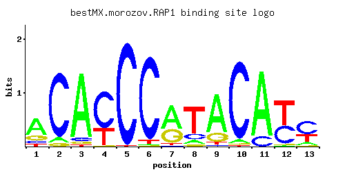

RAP1
YNL216W, TUF1, TBA1, GRF1
DNA-binding protein involved in either activation or repression of transcription, depending on binding site context; also binds telomere sequences and plays a role in telomeric position effect (silencing) and telomere structure
Best-performing DNA-binding model.

View and copy the recommended matrices ↘
A | 0.617 0.070 0.886 0.004 0.003 0.011 0.592 0.087 0.753 0.044 0.855 0.011 0.126 C | 0.097 0.882 0.050 0.680 0.992 0.945 0.017 0.149 0.033 0.931 0.142 0.412 0.549 G | 0.201 0.047 0.041 0.009 0.001 0.004 0.346 0.058 0.178 0.013 0.002 0.021 0.036 T | 0.085 0.001 0.023 0.307 0.004 0.040 0.044 0.706 0.036 0.012 0.001 0.555 0.290
A | 61 7 88 0 0 1 59 8 75 4 85 1 12 C | 9 88 5 68 99 94 1 14 3 93 14 41 54 G | 20 4 4 0 0 0 34 5 17 1 0 2 3 T | 8 0 2 30 0 4 4 70 3 1 0 55 28
A | 0.66 -1.52 1.02 -4.38 -4.67 -3.37 0.62 -1.30 0.86 -1.98 0.98 -3.37 -0.93 C | -0.62 1.59 -1.28 1.33 1.71 1.66 -2.36 -0.19 -1.70 1.64 -0.24 0.83 1.12 G | 0.11 -1.34 -1.48 -3.00 -5.19 -3.81 0.65 -1.13 -0.01 -2.63 -4.50 -2.15 -1.61 T | -1.33 -5.77 -2.63 -0.04 -4.38 -2.08 -1.98 0.79 -2.18 -3.28 -5.77 0.55 -0.10
Alternative candidate matrices 9
Historical matrix candidates from the original ScerTF database. Expand a source to inspect its original logo, scores, and matrix values.
RAP1Badis et. al.P = 7.54e-80View matrix ↘
RAP1_AFoat et. al.P = 4.31e-61View matrix ↘
RAP1_BFoat et. al.P = 9.20e-75View matrix ↘
RAP1Harbison et. al.P = 2.18e-78View matrix ↘
RAP1Macisaac et. alP = 3.55e-87View matrix ↘
RAP1Pachkov et alP = 1.09e-62View matrix ↘
RAP1Zhu J and MQ ZhangP = 1.57e-56View matrix ↘
RAP1Zhu et. al.P = 2.40e-34View matrix ↘
RAP1Zhao and StormoP = 1.05e-14View matrix ↘
Gene-level annotations and interactions.
Genes bound in ChIP-chip experiments 408 genes
YAL033W, YAL034C, YAL040C, YAL053W, YAL054C, YBL022C, YBL029W, YBL048W, YBL049W, YBL072C, YBL087C, YBL092W, YBL093C, YBL109W, YBL111C, YBL112C, YBL113C, YBR084C-A, YBR085W, YBR116C, YBR117C, YBR118W, YBR181C, YBR188C, YBR189W, YBR190W, YBR191W, YBR196C, YCL024W, YCL025C, YCL030C, YCL036W, YCL037C, YCL065W, YCL066W, YCL067C, YCR024C-A, YCR025C, YCR039C, YCR040W, YCR041W, YDL022W, YDL032W, YDL035C, YDL060W, YDL061C, YDL075W, YDL076C, YDL082W, YDL083C, YDL130W, YDL133W, YDL136W, YDL184C, YDL186W, YDL188C, YDL191W, YDR024W, YDR025W, YDR064W, YDR100W, YDR109C, YDR110W, YDR111C, YDR186C, YDR188W, YDR210W-C, YDR240C, YDR247W, YDR259C, YDR270W, YDR300C, YDR301W, YDR312W, YDR324C, YDR325W, YDR393W, YDR418W, YDR447C, YDR448W, YDR449C, YDR450W, YDR470C, YDR471W, YDR500C, YDR501W, YDR543C, YDR544C, YDR545W, YEL007W, YEL008W, YEL009C, YEL022W, YEL023C, YEL036C, YEL051W, YEL054C, YEL074W, YEL075C, YEL076C, YEL076C-A, YER031C, YER032W, YER035W, YER046W, YER056C-A, YER059W, YER074W, YER088C, YER101C, YER102W, YER116C, YER117W, YER130C, YER131W, YER168C, YER169W, YFL014W, YFL015C, YFL016C, YFL021W, YFL022C, YFL023W, YFL024C, YFL034W, YFL046W, YFL063W, YFL064C, YFL065C, YFR031C-A, YGL030W, YGL031C, YGL071W, YGL072C, YGL073W, YGL074C, YGL075C, YGL103W, YGL104C, YGL115W, YGL123W, YGL124C, YGL135W, YGL136C, YGL147C, YGL188C, YGL189C, YGL258W, YGR032W, YGR033C, YGR034W, YGR038C-A, YGR050C, YGR087C, YGR117C, YGR118W, YGR143W, YGR148C, YGR149W, YGR150C, YGR180C, YGR182C, YGR192C, YGR213C, YGR214W, YGR258C, YGR283C, YGR296W, YHL001W, YHL015W, YHL016C, YHL038C, YHL049C, YHR021C, YHR021W-A, YHR033W, YHR091C, YHR096C, YHR122W, YHR141C, YHR142W, YHR203C, YHR204W, YIL012W, YIL013C, YIL018W, YIL053W, YIL057C, YIL069C, YIL121W, YIL133C, YIL148W, YIL149C, YIL174W, YIL175W, YIL177C, YIR016W, YJL026W, YJL027C, YJL046W, YJL047C, YJL078C, YJL079C, YJL089W, YJL090C, YJL133W, YJL134W, YJL135W, YJL136C, YJL177W, YJL178C, YJL189W, YJL190C, YJL191W, YJL192C, YJL225C, YJR058C, YJR059W, YJR132W, YJR134C, YJR135W-A, YJR139C, YJR145C, YJR146W, YJR147W, YKL006C-A, YKL006W, YKL060C, YKL062W, YKL081W, YKL082C, YKL150W, YKL151C, YKL152C, YKL156W, YKL180W, YKL182W, YKR087C, YKR092C, YKR094C, YKR095W, YLL037W, YLL039C, YLL043W, YLL045C, YLR023C, YLR044C, YLR047C, YLR048W, YLR061W, YLR112W, YLR166C, YLR167W, YLR174W, YLR183C, YLR184W, YLR185W, YLR255C, YLR256W, YLR256W-A, YLR286C, YLR287C-A, YLR300W, YLR311C, YLR312C, YLR312W-A, YLR325C, YLR326W, YLR333C, YLR340W, YLR344W, YLR387C, YLR388W, YLR390W-A, YLR399C, YLR400W, YLR401C, YLR402W, YLR406C, YLR407W, YLR441C, YLR447C, YLR448W, YLR452C, YLR462W, YLR463C, YLR464W, YLR465C, YLR466W, YLR467W, YML024W, YML025C, YML026C, YML063W, YML064C, YML073C, YML088W, YML089C, YML091C, YML133C, YMR013C, YMR015C, YMR116C, YMR142C, YMR143W, YMR194W, YMR205C, YMR206W, YMR224C, YMR229C, YMR230W, YMR231W, YMR242C, YMR265C, YMR266W, YNL010W, YNL011C, YNL027W, YNL029C, YNL069C, YNL096C, YNL101W, YNL144C, YNL162W, YNL163C, YNL190W, YNL216W, YNL288W, YNL302C, YNL309W, YNL311C, YNL329C, YNL337W, YNL338W, YNL339C, YNR076W, YOL039W, YOL040C, YOL052C-A, YOL059W, YOL060C, YOL082W, YOL086C, YOL109W, YOL120C, YOL121C, YOL127W, YOL128C, YOL136C, YOL158C, YOR032C, YOR056C, YOR057W, YOR095C, YOR096W, YOR100C, YOR101W, YOR124C, YOR161C, YOR182C, YOR183W, YOR234C, YOR268C, YOR269W, YOR292C, YOR293W, YOR296W, YOR302W, YOR303W, YOR312C, YOR317W, YOR338W, YOR342C, YOR343C, YOR344C, YOR359W, YOR365C, YOR367W, YPL016W, YPL017C, YPL054W, YPL055C, YPL056C, YPL079W, YPL080C, YPL090C, YPL131W, YPL142C, YPL143W, YPL145C, YPL220W, YPL283C, YPR029C, YPR030W, YPR042C, YPR043W, YPR080W, YPR102C, YPR103W, YPR105C, YPR106W, YPR131C, YPR132W, YPR149W, YPR161C, YPR192W, YPR202W, YPR203W
Genes affected by TF deletion 845 genes
YBR004C, YCR012W, YCL055W, YCR016W, YDR034C-C, YDR064W, YDR404C, YER118C, YGL171W, YGL234W, YGR280C, YHL046C, YHL016C, YIL078W, YIL080W, YIL144W, YIL116W, YIL148W, YJR016C, YJR048W, YLR214W, YMR041C, YMR014W, YMR045C, YMR046W-A, YNL050C, YOL012C, YOL043C, YOR253W, YOR192C-A, YOR193W, YOR225W, YOR195W, YOR227W, YOR259C, YPL174C, YPL237W, YAL005C, YKL122C, YAL068C, YBR187W, YBR219C, YBR189W, YBR191W, YBR162C, YDL126C, YDL130W, YDR194C, YEL042W, YEL046C, YFR032C-A, YGL009C, YFR038W, YGR091W, YGR124W, YHR143W, YHR174W, YHR119W, YHR148W, YJL115W, YKL074C, YKL045W, YKL049C, YLR025W, YLR027C, YLR058C, YLR029C, YLR062C, YLR461W, YLR432W, YLR463C, YLR465C, YLR467W, YMR194W, YOR035C, YOR006C, YOR381W, YPL019C, YPL051W, YBR033W, YEL007W, YBL083C, YBR031W, YBL087C, YBR005W, YCR037C, YCR039C, YCR013C, YCL054W, YDR034C-D, YDR365W-B, YDR399W, YER173W, YER117W, YGL168W, YGR279C, YHL013C, YHL015W, YJR015W, YJR047C, YKR042W, YKR013W, YLR273C, YLR245C, YLR249W, YML117W, YMR015C, YMR046C, YOL011W, YOL014W, YOL046C, YOL016C, YOR192C-B, YOR194C, YOR226C, YKL123W, YAL003W, YAL038W, YBR155W, YBR220C, YDL061C, YGL040C, YGL012W, YGR155W, YGR157W, YHR142W, YHR179W, YJL080C, YJL114W, YJL052W, YJL116C, YJL086C, YKL048C, YLR061W, YLR431C, YLR405W, YMR191W, YOR068C, YPL014W, YPL048W, YOR380W, YPL020C, YPR138C, YBR126C, YDR050C, YDR351W, YBR092C, YDR158W, YDR500C, YFL039C, YFL045C, YGR005C, YHR081W, YHR025W, YIL176C, YIR034C, YJR143C, YKL012W, YJR145C, YJR147W, YJR118C, YKR105C, YLL064C, YLL034C, YLR340W, YLR372W, YMR137C, YOL106W, YOL138C, YOR287C, YPL268W, YPR018W, YPL272C, YPR052C, YAR070C, YBL027W, YBR287W, YDL192W, YDR276C, YDR312W, YDR341C, YDR314C, YER055C, YER056C-A, YGL103W, YGL135W, YGL077C, YGR214W, YHR208W, YIL018W, YIL020C, YIL052C, YJL177W, YKL172W, YKL143W, YLR182W, YLR157C-A, YML056C, YML058W-A, YMR316W, YNL301C, YNR026C, YPL142C, YPL146C, YHR183W, YBR063C, YBR093C, YBR065C, YDR098C-A, YDR461W, YDR525W, YDR463W, YFL010C, YFR002W, YFL013C, YGL263W, YGR034W, YHR021C, YHR082C, YHR026W, YKL017C, YLL061W, YLR304C, YLR367W, YLR339C, YMR136W, YNL110C, YOL103W-B, YOL076W, YOL141W, YPL265W, YPR045C, YBR252W, YCL020W, YDL191W, YDR309C, YER023W, YER025W, YER027C, YER057C, YER087C-A, YGL102C, YGL076C, YGR211W, YIL051C, YJL148W, YKL199C, YLR153C, YML022W, YML024W, YML026C, YML028W, YML058W, YMR285C, YNR025C, YNL302C, YOR096W, YPL079W, YPL111W, YPL143W, YPL081W, YPL145C, YBL093C, YCR021C, YDR012W, YDR072C, YDR380W, YER119C-A, YER123W, YGL177W, YIL124W, YJR024C, YJR026W, YJR028W, YJR094W-A, YLR227W-A, YLR257W, YLR287C-A, YMR050C, YML123C, YOL052C-A, YNR071C, YOR261C, YPL213W, YAR010C, YAR015W, YBR227C, YBR167C, YDL133C-A, YDR224C, YDR198C, YDR226W, YGR161C-C, YGR161W-A, YHR156C, YJL121C, YKL084W, YKL086W, YKL056C, YLR096W, YLR068W, YLR100W, YLR438C-A, YLR410W-B, YLR441C, YML006C, YMR230W, YMR173W, YMR202W, YNL217W, YNL284C-A, YOR009W, YOR385W, YPL055C, YOR389W, YBR037C, YBL092W, YBR041W, YBR012W-A, YCL064C, YER152C, YHL021C, YIL121W, YIL091C, YIL155C, YJR025C, YJR027W, YJR029W, YKR052C, YLR225C, YLR256W-A, YMR051C, YNL054W-A, YNR066C, YOL052C, YOR230W, YOR234C, YPL218W, YPL249C-A, YAL012W, YAR009C, YBR196C, YDL075W, YDR225W, YDR261C, YER003C, YFR041C, YGL016W, YGR159C, YGR129W, YGR161C, YGR102C, YGR161C-D, YGR161W-B, YKL081W, YLR035C-A, YLR037C, YLR101C, YLR438W, YLR410W-A, YNL216W, YNL220W, YOR078W, YPL054W, YPL024W, YPL026C, YPL028W, YPL060C-A, YDL041W, YCR087W, YDR134C, YDR502C, YDR476C, YFL020C, YFL022C, YGR037C, YGR067C, YGR009C, YGR038C-B, YGR013W, YHR065C, YJL026W, YIR009W, YJR151C, YKL024C, YLR003C, YLR344W, YLR314C, YLR378C, YLR380W, YOL086C, YOL118C, YOL150C, YOR293W, YOR355W, YPL276W, YPL278C, YPR028W, YCL030C, YDR290W, YER036C, YER063W, YGL111W, YGL115W, YGL147C, YGR254W, YGR192C, YHR214C-B, YHR215W, YJL191W, YKL180W, YKL182W, YLR128W, YLR162W, YLR194C, YLR134W, YPL088W, YPL090C, YFL014W, YFL031W, YBR071W, YBR105C, YCR087C-A, YDR167W, YDR170W-A, YDR471W, YDR473C, YFR010W, YGR008C, YGR038C-A, YHR060W, YHR090C, YHR092C, YIR004W, YJL027C, YJR150C, YJR123W, YKL023W, YLR379W, YLR349W, YMR142C, YMR083W, YNL118C, YOL147C, YOR292C, YOR298C-A, YPL273W, YPL275W, YAR071W, YAR075W, YBL002W, YBL032W, YBR290W, YBR296C, YDL229W, YDR316W-A, YDR289C, YGR251W, YGR257C, YIL053W, YHR214C-C, YIL057C, YHR216W, YJL158C, YJL190C, YML090W, YML063W, YNL308C, YNR003C, YBR048W, YBL103C, YBR052C, YCL067C, YDR418W, YDR450W, YER127W, YER131W, YGL189C, YGR294W, YHR010W, YHL032C, YIL132C, YJR070C, YKR087C, YKR057W, YKR059W, YLR259C, YLR293C, YLR264W, YNL065W, YNL036W, YNL067W, YNL069C, YOL002C, YOL064C, YOR205C, YOR237W, YPL189W, YPL221W, YPL193W, YPL257W-A, YAL025C, YBR177C, YDL082W, YDL084W, YDR261W-A, YDR210W, YEL026W, YGR109W-B, YHR132W-A, YHR196W, YJL101C, YKL060C, YKL062W, YKL125W, YKL096W, YKL127W, YLR040C, YLR104W, YLR074C, YLR044C, YLR076C, YLR110C, YLR447C, YMR208W, YMR242C, YNL227C, YPL037C, YEL054C, YBL098W, YBL101W-A, YDR447C, YDR417C, YER156C, YER128W, YER159C-A, YHR005C-A, YHL001W, YIL127C, YLR231C, YML126C, YML128C, YMR027W, YNL096C, YNL066W, YOL059W, YNR076W, YOR208W, YPL220W, YAR020C, YDL081C, YDL083C, YFR051C, YHR163W, YJL134W, YKL120W, YKL124W, YLR075W, YLR107W, YLR448W, YMR173W-A, YMR203W, YNL288W, YPL061W, YOR394W, YBR078W, YBR084C-A, YCR097W, YGR049W, YHR071W, YJL034W, YJL038C, YKL028W, YKL030W, YJR132W, YKL001C, YLL044W, YLR388W, YMR120C, YOL120C, YOR302W, YOR335C, YOR367W, YPR002W, YBL072C, YBL043W, YBL074C, YDR353W, YER043C, YER072W, YGL119W, YGL123W, YGR196C, YGR260W, YGR234W, YKL153W, YML045W-A, YPL132W, YBR145W, YDL014W, YCR096C, YDR174W, YDR176W, YDR542W, YDR481C, YFL023W, YFL056C, YFL027C, YGR074W, YGR044C, YGR078C, YHR066W, YHR068W, YJR158W, YKL029C, YJR133W, YLL045C, YLR383W, YLR355C, YLR325C, YLR357W, YMR116C, YMR119W-A, YMR121C, YMR152W, YNL160W, YNL162W, YOL119C, YOL151W, YOL121C, YOL155C, YOR360C, YOR303W, YOR304W, YPL281C, YPR002C-A, YBL005W-A, YBR266C, YCL031C, YDR321W, YDR354W, YDR297W, YDR326C, YER044C, YGR259C, YIL035C, YJL164C, YJL196C, YKL152C, YKL156W, YLR167W, YLR171W, YML040W, YML069W, YML073C, YMR303C, YPL131W, YER091C, YCR004C, YCR034W, YCR069W, YDR094W, YDR454C, YDR396W, YER138C, YGL225W, YGL258W, YHL009W-A, YIL134W, YJR104C, YJR074W, YJR108W, YKR065C, YLR301W, YMR006C, YNL073W, YOL037C, YOL039W, YOL041C, YOR277C, YOR215C, YOR247W, YPL197C, YPL229W, YPL199C, YPL260W, YAL060W, YAR053W, YBR215W, YBR247C, YBR249C, YEL034W, YGL031C, YGL001C, YGR113W, YGR148C, YGR176W, YGR119C, YGR178C, YHR136C, YHR141C, YJL137C, YJL079C, YKL070W, YKL072W, YKL135C, YLR048W, YLR112W, YLR086W, YML015C, YOR063W, YPL011C, YPL043W, YBR025C, YCR028C-A, YCR031C, YCR005C, YDR091C, YDR391C, YFL002W-B, YER165W, YFL004W, YER137C-A, YGL253W, YGL224C, YGL226C-A, YHL003C, YHL033C, YHR019C, YIL133C, YIL171W, YJR105W, YJR043C, YJR045C, YKR094C, YKR096W, YKR100C, YLR267W, YLR271W, YMR038C, YNL072W, YNL076W, YOL067C, YOL038W, YOL040C, YOR244W, YOR248W, YOR282W, YPL228W, YPL257W-B, YPL198W, YAR035W, YAL061W, YBR212W, YDL147W, YDR210W-A, YDR210W-C, YGL030W, YGL032C, YGR145W, YGR118W, YHR197W, YHR137W, YHR203C, YJL136C, YJL138C, YJL078C, YJL110C, YKL067W, YLR117C, YLR452C, YMR243C, YMR215W, YPL044C, YPR158W-B, YDL023C, YCR104W, YDR154C, YDR186C, YFL034C-A, YFR031C-A, YGR085C, YGR027C, YGR087C, YHR109W, YJL041W, YJL012C, YKL006W, YJR139C, YKL010C, YKL041W, YLL024C, YLR334C, YLR398C, YMR158C-B, YOL103W-A, YOR369C, YOR343C-B, YPR008W, YPR040W, YPR074C, YPR044C, YPR076W, YBL082C, YDR300C, YDR365W-A, YJR009C, YLR180W, YNL010W, YNL327W, YNR053C, YPL136W, YHR122W, YBR084W, YBR147W, YDL022W, YDR155C, YDR185C, YDR489W, YGR027W-A, YJL007C, YJL039C, YKL038W, YLL019C, YLR333C, YNL134C, YOL127W, YOL161C, YOR338W, YOR372C, YOR312C, YOR343C-A, YOR374W, YPR075C, YDR299W, YER073W, YER102W, YGR203W, YGR207C, YIL069C, YKL224C, YMR307W, YNR050C, YNR054C, YPL107W
Genes supported by both experiments 156 genes
YBL072C, YBL087C, YBL092W, YBL093C, YBR084C-A, YBR189W, YBR191W, YBR196C, YCL030C, YCL067C, YCR039C, YDL022W, YDL061C, YDL075W, YDL082W, YDL083C, YDL130W, YDL191W, YDR064W, YDR186C, YDR210W-C, YDR300C, YDR312W, YDR418W, YDR447C, YDR450W, YDR471W, YDR500C, YEL007W, YEL054C, YER056C-A, YER102W, YER117W, YER131W, YFL014W, YFL022C, YFL023W, YFR031C-A, YGL030W, YGL031C, YGL103W, YGL115W, YGL123W, YGL135W, YGL147C, YGL189C, YGL258W, YGR034W, YGR038C-A, YGR087C, YGR118W, YGR148C, YGR192C, YGR214W, YHL001W, YHL015W, YHL016C, YHR021C, YHR122W, YHR141C, YHR142W, YHR203C, YIL018W, YIL053W, YIL057C, YIL069C, YIL121W, YIL133C, YIL148W, YJL026W, YJL027C, YJL078C, YJL079C, YJL134W, YJL136C, YJL177W, YJL190C, YJL191W, YJR132W, YJR139C, YJR145C, YJR147W, YKL006W, YKL060C, YKL062W, YKL081W, YKL152C, YKL156W, YKL180W, YKL182W, YKR087C, YKR094C, YLL045C, YLR044C, YLR048W, YLR061W, YLR112W, YLR167W, YLR256W-A, YLR287C-A, YLR325C, YLR333C, YLR340W, YLR344W, YLR388W, YLR441C, YLR447C, YLR448W, YLR452C, YLR463C, YLR465C, YLR467W, YML024W, YML026C, YML063W, YML073C, YMR015C, YMR116C, YMR142C, YMR194W, YMR230W, YMR242C, YNL010W, YNL069C, YNL096C, YNL162W, YNL216W, YNL288W, YNL302C, YNR076W, YOL039W, YOL040C, YOL052C-A, YOL059W, YOL086C, YOL120C, YOL121C, YOL127W, YOR096W, YOR234C, YOR292C, YOR293W, YOR302W, YOR303W, YOR312C, YOR338W, YOR367W, YPL054W, YPL055C, YPL079W, YPL090C, YPL131W, YPL142C, YPL143W, YPL145C, YPL220W
Predicted TF–TF partners 3 genes
AFT2, FHL1, SFP1